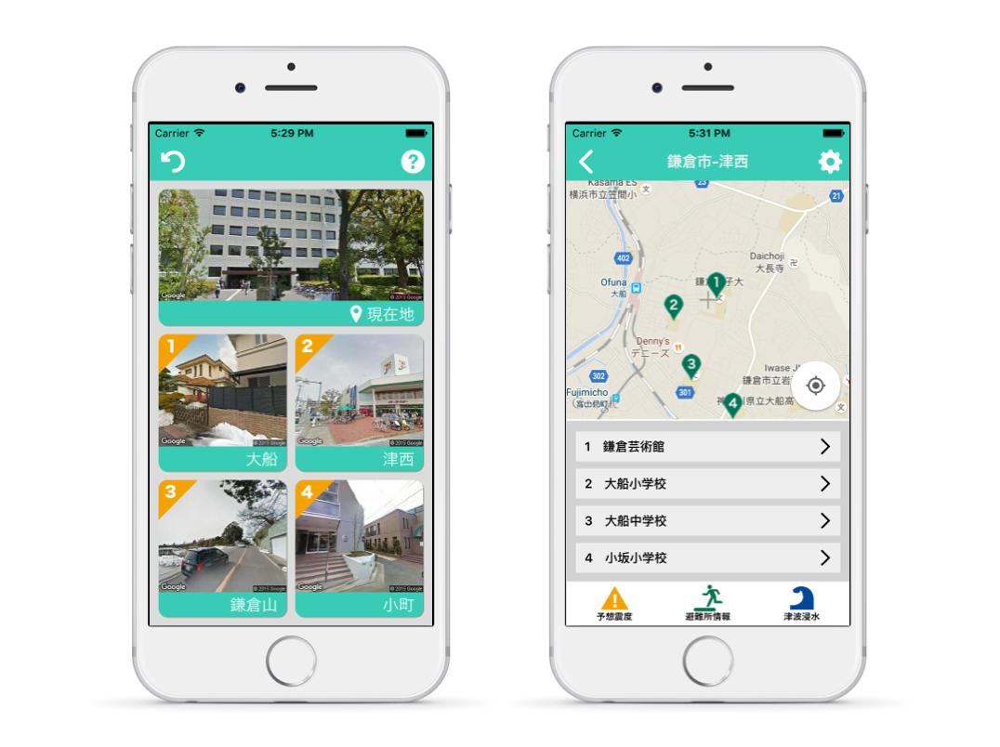
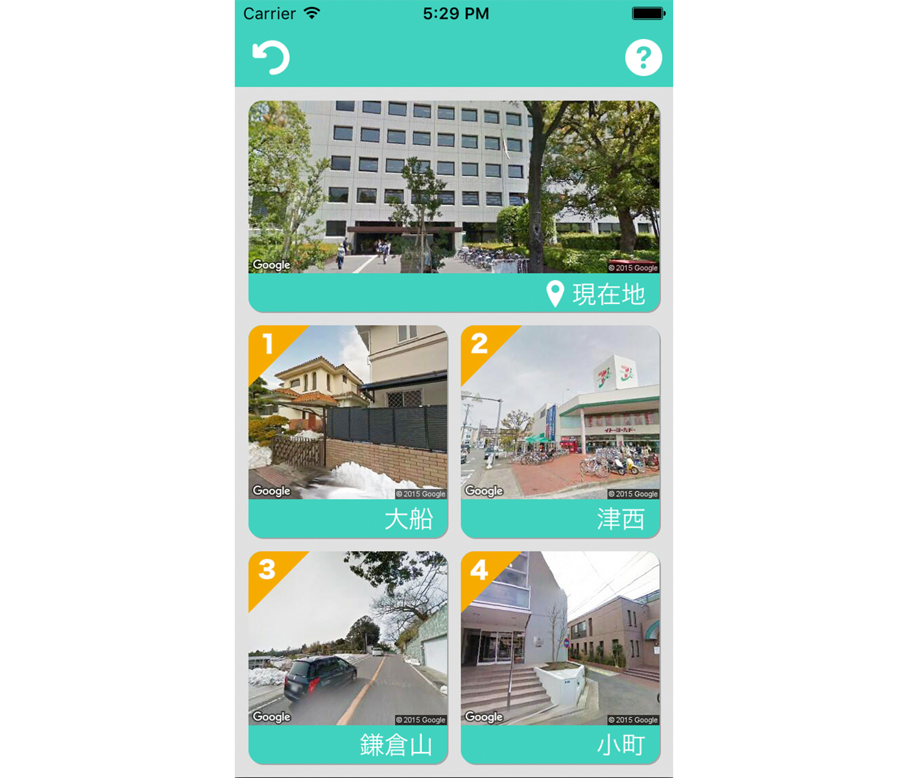
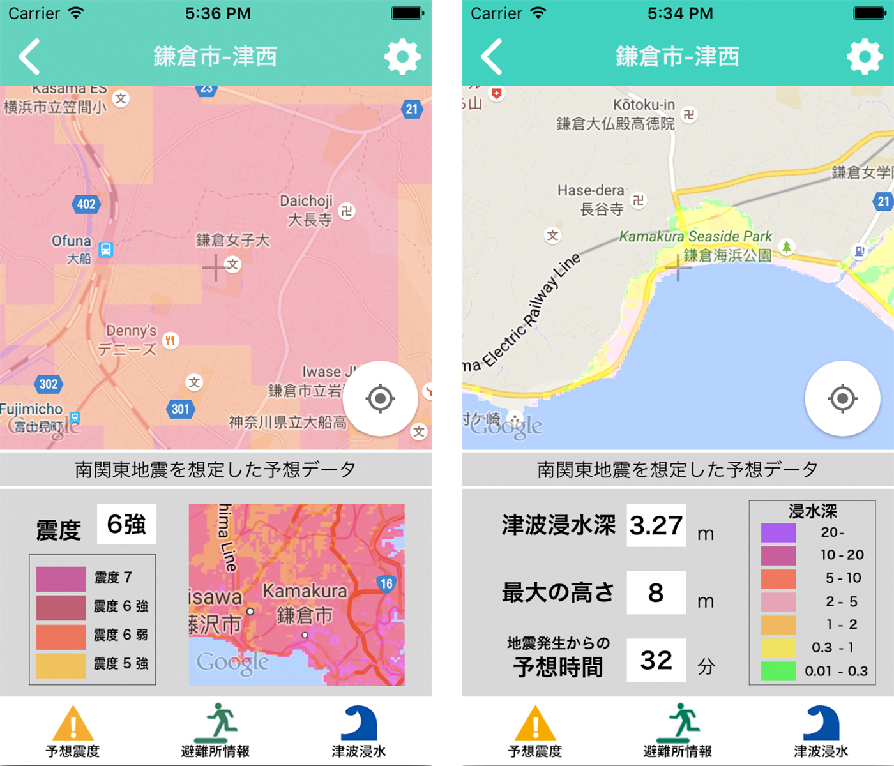

My防災ノートはユーザーの生活圏に合わせた情報を提示する防災学習アプリです。位置情報履歴からユーザーの生活圏を自動で割り出し、各地域において必要な防災情報を提示します。
既存の防災学習アプリは情報量が膨大で、またそれらの優劣が付けられていないものが多い。その結果、ユーザーが閲覧時に迷いやすいという課題がありました。このアプリでは位置情報を用いてユーザー特化型にすることで、その人に必要な情報のみを届けることができます。
アプリを起動すると現在地とユーザーの生活圏のリストが表示されます。（画像はGoogleのストリートビューを利用しているため自動で生成されます。）それぞれのボタンを押すと各地点の防災情報ページへ飛びます。
中心点付近の避難施設、地震、浸水、土砂災害、津波などの情報の中から、その地域において危険性のあるものが表示されます。下のアイコンをタップすることで表示内容を切り替えることが出来ます。
本アプリは国土地理院主催の防災アプリケーションコンテストに応募し受賞しました。また、鎌倉市で行われた防災アプリの実証実験で実際に使用されました。
※現在全国版のリリースに向けて開発中です。